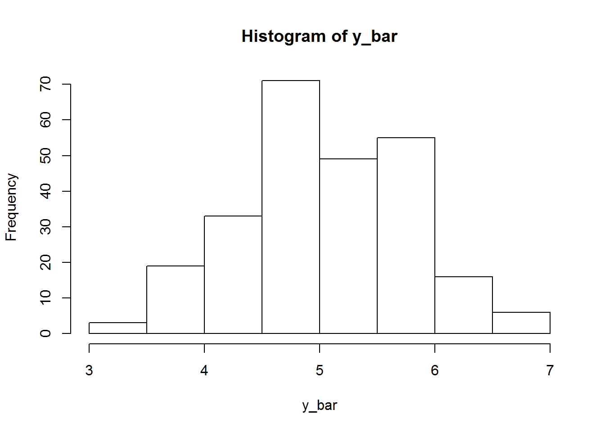

1 Toy Examples
Example 1: The population is shown as the following table.
| Unit_ID | \(y\) |
|---|---|
| 1 | 6 |
| 2 | 8 |
| 3 | 8 |
| 4 | 1 |
| 5 | 6 |
| 6 | 4 |
| 7 | 7 |
| 8 | 5 |
| 9 | 3 |
| 10 | 3 |
The population size \(N=10\). Let us choose the sample size \(n\) be \(3\).
- There are \({10 \choose 3}=120\) possible samples. In practice, we can only have one sample. So, there will always be uncertainty if we use one sample to infer the whole population.
- The population mean \(\bar{Y}=5.1\).
- The distribution of all possible sample means is shown below. 